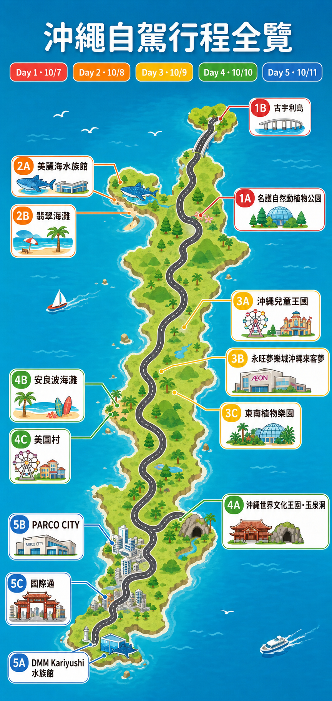

沖繩 7 日自駕
2026.10.06（週二）– 10.12（週一）
6 晚
6 天租車
日本時間 +1 小時
航班資訊桃園 ⇄ 那霸
今日去程
今日回程
去程 IT230
10/6 06:50 → 09:20
桃園 → 那霸｜當地時間
回程 IT231
10/12 10:10 → 10:40
那霸 → 桃園｜各地時間
OTS 租車10/6 取車・10/11 還車
今日取車
今日還車
取車與還車
10/6 11:00 臨空豐崎取車 → 10/11 17:00 DFS 還車
機場至臨空豐崎有免費接駁；還車前預留加油與市區塞車時間
抵達沖繩・取車
留白適應日，不塞景點
✈ 去程航班取車日
09:20
抵達那霸機場
約 90 分入境、領行李、購買／啟用 eSIM。跟著 OTS 指示前往免費接駁車乘車處。
護照租車憑證日本時間
10:30
搭 OTS 免費接駁
約 20 分道路狀況可能影響車程；找不到乘車處時直接致電營業所。
11:00
OTS 臨空豐崎取車
45–60 分確認 ETC 卡、保險、車身刮痕、油種與還車規則。地址：豊見城市豊崎3-37。
預約時間固定08:00–19:00
12:15
午餐・採買・前往住宿
彈性推薦先在附近 iias 沖繩豐崎用餐，補飲水與車用品，再前往住宿。若精神好，可散步豐崎美 SUN 海灘。
傍晚
入住 Hotel Yugaf Inn Okinawa
第 1／3 晚10/6–10/9 連住 3 晚；抵達後先確認停車位置、早餐與退房時間。
4 人房＋1 人房
今天的提醒
台灣駕照不可直接使用；請攜帶台灣駕照正本與日文譯本。日本靠左行駛，右轉時特別注意不要誤入對向車道。
08:00
Hotel Yugaf 出發 → 名護
短程今晚續住 Hotel Yugaf Inn Okinawa；出門前確認房卡與車位。
10:00
名護自然動植物公園
2 小時地圖景點 1A。建議對照訂票名稱確認是否指 Neo Park Okinawa；園區大，穿好走的鞋。
地圖 1A買食物進園
12:15
名護午餐 (或在動物園吃)
60 分避免趕路，午餐放在名護市區；用餐後再前往古宇利島。
13:20
名護 → 古宇利島
約 35 分過古宇利大橋前後都有拍照點；勿臨停於橋面。
14:00
古宇利島・海灘
90 分地圖景點 1B。先逛古宇利海灘，再依天候決定是否上古宇利海洋塔。
地圖 1B塔 10:00–18:00最晚入園 17:30
17:00
返回 Hotel Yugaf Inn Okinawa
第 2／3 晚北部傍晚易疲勞；不要把晚餐訂得太早。
雨天調整
古宇利島遇大雨可縮短，改逛名護鳳梨園或 AEON 名護店；強風時海洋塔屋頂可能關閉。
07:00
Hotel Yugaf 出發 → 海洋博公園
約 40 分目標停 P7 北門立體停車場；園內步行距離長。
09:00
沖繩美麗海水族館
3–3.5 小時地圖景點 2A。先看黑潮之海，再依當日表演時間調整海豚劇場。
地圖 2A08:30–18:30最晚入館 17:30
12:30
園區午餐
60 分館內餐廳尖峰可能排隊；也可準備簡單食物在園區休息區用餐。
13:45
翡翠海灘
90 分地圖景點 2B。10 月屬海洋博公園通常期，設施時間較夏季短；依浪況與救生公告決定是否下水。
地圖 2B看當日海況
15:30
備瀨福木林道（選配）
45 分若體力足夠再去；下雨或孩子累了就直接返程。
16:30
返回 Hotel Yugaf Inn Okinawa
第 3／3 晚約 40 分鐘車程；今晚整理行李，明早退房並移動至中部。
今天的提醒
水族館官方目前公告 2027/3/31 前無計畫休館（颱風等臨時狀況除外）。海灘設施則依海洋博公園通常期時間運作。
08:10
Hotel Yugaf 退房 → 中部
約 70 分確認房內與停車位沒有遺留物品，再前往沖繩兒童王國。
09:30
沖繩兒童王國
3 小時地圖景點 3A。動物園與兒童設施範圍大，先挑必看區域，不必硬走完。
地圖 3A週二通常休園
12:35
兒童王國 → AEON Mall Rycom
約 10 分距離近，適合午餐與室內休息。
12:50
永旺夢樂城沖繩來客夢
2 小時地圖景點 3B。先用餐再採買；大型商場容易超時，設定 15:00 離開。
地圖 3B餐飲選擇多
15:00
Rycom → 東南植物樂園
約 20 分下午仍可能炎熱，先補水再入園。
15:30
東南植物樂園
2–2.5 小時地圖景點 3C。官方時段會隨季節活動變更；2026 年 10 月活動尚需出發前確認。
地圖 3C時段浮動
18:00
入住 Okinawa Grand Mer Resort
1 晚若 10 月燈飾尚未開始，不建議為了等天黑滯留；晚餐後前往飯店辦理入住。
4 人房＋1 人房
時間不夠怎麼刪
優先保留兒童王國與東南植物樂園；Rycom 壓縮為午餐 60–90 分鐘即可。若下雨則反過來，把 Rycom 留久一點。
08:00
Grand Mer 退房 → 沖繩世界
約 50 分行李全數上車後往南移動；貴重物品不要留在可見位置。
09:00
沖繩世界文化王國・玉泉洞
3 小時地圖景點 4A。洞內濕滑且有階梯；先走玉泉洞，再看表演與文化村。
地圖 4A洞內約 21°C
12:10
午餐
60 分可在園內或往北途中用餐，避免餓著開長程。
13:10
沖繩世界 → 安良波海灘
約 55 分週六午後可能塞車，預留 15–20 分鐘緩衝。
14:15
安良波海灘
75 分地圖景點 4B。以散步、玩沙為主；下水依現場開放與海況公告。
地圖 4B看當日海況
15:40
海灘 → 美國村
約 10 分停車場午後可能滿位，跟隨現場導引，不要繞同一區太久。
16:00
美國村・晚餐・夕陽
3–4 小時地圖景點 4C。商店營業各自不同；先看海邊夕陽，再吃晚餐與逛街。
地圖 4C夕陽時段
20:00
入住 La'gent 飯店 沖繩那霸
第 1／2 晚從美國村前往那霸約 40–50 分鐘；抵達後確認隔日早餐與停車規則。
4 人房＋1 人房
今天的提醒
玉泉洞不適合推嬰兒車，全程走完再回到地面。若同行者行動不便，先查無障礙替代動線。
水族館・購物・還車
地圖 Day 5｜17:00 前還車
還車日
08:20
La'gent 飯店 → 豐崎
約 25 分今晚續住同一間飯店；只帶當日用品，行李留在房內。
09:00
DMM Kariyushi 水族館
2–2.5 小時地圖景點 5A。就在 iias 沖繩豐崎內，開館即入場最省時間。
地圖 5A通常 09:00–19:00最晚入館前 60 分
11:40
豐崎 → PARCO CITY
約 35 分週日市區交通較慢，保守抓 45 分鐘。
12:20
San-A 浦添西海岸 PARCO CITY
2 小時地圖景點 5B。午餐＋最後採買；14:30 必須離開，避免壓縮還車。
地圖 5B設 14:20 鬧鐘
14:30
加滿油 → DFS
預留 2 小時找 DFS 附近加油站並保留收據；市區塞車與還車檢查都算在內。
16:30
OTS DFS 營業所還車
17:00 前位於 T Galleria 沖繩／歌町站旁。取回所有行李、ETC 卡與個人物品。
預約時間固定保留加油收據
17:15
歌町站 → 國際通
單軌約 10 分搭 Yui Rail 至牧志站或縣廳前站。
17:45
國際通・晚餐
2–3 小時地圖景點 5C。最後一晚只買方便帶上飛機的物品，避免行李超重。
地圖 5C不需開車
晚上
返回 La'gent 飯店 沖繩那霸
第 2／2 晚搭單軌或步行返回飯店；睡前完成行李與液體分裝。
還車日不可妥協的緩衝
PARCO CITY 最晚 14:30 離開。若 15:30 仍未接近 DFS，直接取消加碼行程；還車逾時風險高於少逛一間店。
06:30
La'gent 退房前檢查
30 分護照、手機、錢包、充電器、退稅商品、托運液體。早餐以可外帶為主。
07:00
La'gent 飯店 → 那霸機場
依交通方式可搭單軌或預約計程車；尖峰時段不要壓線。
07:40
抵達那霸機場
起飛前 2.5 小時辦理報到、托運與安檢。依虎航最新通知與登機證上的櫃台／登機門為準。
10:10
IT231 那霸 → 桃園
抵台 10:40兩地有 1 小時時差；航班顯示時間皆為當地時間。
航班固定確認登機門
今天的提醒
廉航報到與行李規定可能調整，請在出發前一天查看台灣虎航 App／Email，不以本頁時間取代航空公司通知。
更多工具
較少使用的資料集中放在這裡，需要時再開啟。
旅途記錄
在每日行程最下方新增記錄；這裡彙整全部內容，並可分享或備份。
記錄筆數
0 筆
尚無記錄
記錄花費
¥0
只計有填金額的項目
記錄只存在這台裝置的瀏覽器。清除瀏覽資料、換手機，或 iPhone Safari 長時間未開啟本站都可能遺失，建議每天匯出一次備份。同行者可互傳備份檔再匯入，相同記錄不會重複。
沖繩自駕行程全覽
依照 1A–5C 編號快速對照每日景點；此圖為位置與動線示意，並非導航地圖。

點擊地圖可開啟完整尺寸
旅費整理
5 人同行的預估費用；台幣與日幣分開顯示，避免匯率換算造成誤差。
台幣已知費用
NT$93,974
機票＋住宿估算
日幣現金
¥67,210
6 天租車費
機票
新台幣
| 項目 | 總額 | 人數 | 每人費用 |
|---|
| 機票 | NT$55,612 | 5 人 | NT$11,122 |
住宿
新台幣
Hotel Yugaf Inn Okinawa
3 晚
| 房型 | 總價 | 晚數 | 每晚費用 |
|---|
| 4 人房 | NT$9,875 | 3 晚 | NT$3,292 |
| 1 人房 | NT$5,674 | 3 晚 | NT$1,891 |
Okinawa Grand Mer Resort
每晚價格
| 房型 | 每晚費用 |
|---|
| 4 人房 | NT$3,216 |
| 1 人房 | NT$1,839 |
La'gent 飯店 沖繩那霸
2 晚
| 房型 | 總價 | 晚數 | 每晚費用 |
|---|
| 4 人房 | NT$11,530 | 2 晚 | NT$5,765 |
| 1 人房 | NT$6,228 | 2 晚 | NT$3,114 |
住宿合計 NT$38,362，依 6 晚行程推估 Okinawa Grand Mer Resort 住宿 1 晚。
租車
日幣・付現
| 項目 | 天數 | 總費用 | 付款方式 |
|---|
| 租車 | 6 天 | ¥67,210 | 現金 |
租車費為日幣，未納入上方台幣合計；實際支出請以付款當日匯率為準。
實用資訊
- 緊急電話警察 110｜消防／救護車 119｜海上事故 118
- 台北駐日經濟文化代表處 那霸分處+81-98-862-7008｜護照遺失等緊急協助
- OTS 臨空豐崎營業所098-856-8877｜豊見城市豊崎3-37｜08:00–19:00
- 日本道路救援 JAF0570-00-8139 或手機短碼 #8139
- 加油用語「レギュラー、満タンでお願いします」＝一般汽油，請加滿。
- 停車記錄停好車立刻拍下樓層、區域編號與停車場入口；大型商場很容易找不到車。
- 颱風／豪雨先查景點官網與航空公司通知；不要前往封閉海灘、海堤或強風中的古宇利大橋。
營業資訊整理於 2026/8/5，來源以景點與 OTS 官方網站為主。官方公告、天候與現場指示優先於本頁。